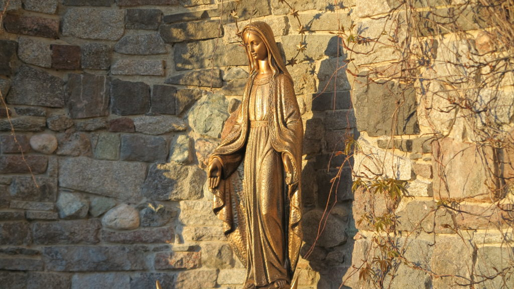
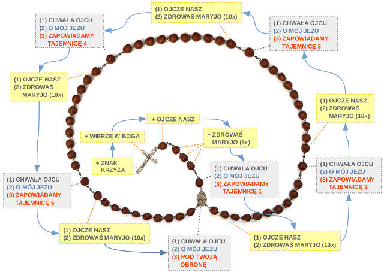

Modlitwa różańcowa
Tajemnice Różańca Świętego
Tajemnice radosne (poniedziałki i soboty)
- Zwiastowanie Najświętszej Maryi Pannie
- Nawiedzenie świętej Elżbiety
- Narodzenie Pana Jezusa
- Ofiarowanie Pana Jezusa w świątyni
- Znalezienie Pana Jezusa w świątyni
Tajemnice światła (czwartki)
- Chrzest Pana Jezusa w Jordanie
- Objawienie się Pana Jezusa na weselu w Kanie Galilejskiej
- Głoszenie Królestwa Bożego i wzywanie do nawrócenia
- Przemienienie na górze Tabor
- Ustanowienie Eucharystii
Tajemnice bolesne (wtorki i piątki)
- Modlitwa Pana Jezusa w Ogrójcu
- Biczowanie Pana Jezusa
- Cierniem ukoronowanie Pana Jezusa
- Dźwiganie krzyża
- Ukrzyżowanie i śmierć Pana Jezusa
Tajemnice chwalebne (środy i niedziele)
- Zmartwychwstanie Pana Jezusa
- Wniebowstąpienie Pana Jezusa
- Zesłanie Ducha Świętego
- Wniebowzięcie Najświętszej Maryi Panny
- Ukoronowanie Najświętszej Maryi Panny na Królową nieba i ziemi [1]
Przebieg modlitwy w Kaplicy Cudownego Obrazu na Jasnej Górze

Witaj Królowo, Matko Miłosierdzia
Witaj, Królowo, Matko miłosierdzia,
życia, słodyczy i nadziejo nasza, witaj!
Do Ciebie wołamy wygnańcy, synowie Ewy;
do Ciebie wzdychamy jęcząc i płacząc na tym łez padole.
Przeto, Orędowniczko nasza,
one miłosierne oczy Twoje na nas zwróć,
a Jezusa, błogosławiony owoc żywota Twojego,
po tym wygnaniu nam okaż.
O łaskawa, o litościwa, o słodka Panno Maryjo! [4]
K: Dozwól nam chwalić Cię, Panno Święta.
W: I daj nam moc przeciw nieprzyjaciołom Twoim.
K: Módlmy się. Dozwól nam Wszechmogący Boże, rozważającym tajemnice Świętego Różańca, które wierny Twój Kościół ofiaruje Ci na cześć błogosławionej Maryi, zawsze dziewicy, dostąpić łaski Twojej. Abyśmy całym sercem, Tobie ufność naszą pokładając, doznawali na sobie rozważania tych tajemnic i upragnionych pożytków dostąpili. Przez Chrystusa, Pana naszego.
W: Amen.
Różaniec

Skład Apostolski (Wierzę w Boga) - na początek na krzyżyku
Wierzę w Boga Ojca wszechmogącego, Stworzyciela nieba i ziemi. I w Jezusa Chrystusa, Syna Jego jedynego, Pana naszego, który się począł z Ducha Świętego; narodził się z Maryi Panny; umęczon pod Ponckim Piłatem, ukrzyżowan, umarł i pogrzebion;
zstąpił do piekieł; trzeciego dnia zmartwychwstał; wstąpił na niebiosa; siedzi po prawicy Boga Ojca wszechmogącego; stamtąd przyjdzie sądzić żywych i umarłych. Wierzę w Ducha Świętego, święty Kościół powszechny, Świętych obcowanie, grzechów odpuszczenie, ciała zmartwychwstanie, żywot wieczny. Amen.
Modlitwa Pańska (Ojcze nasz) - na dużych paciorkach
Ojcze nasz, któryś jest w niebie, święć się imię Twoje, przyjdź królestwo Twoje, bądź wola Twoja, jako w niebie tak i na ziemi.
Chleba naszego powszedniego daj nam dzisiaj. I odpuść nam nasze winy, jako i my odpuszczamy naszym winowajcom. I nie wódź nas na pokuszenie, ale nas zbaw od złego. Amen. [1]
Pozdrowienie anielskie (Zdrowaś Maryjo) - na małych paciorkach
Zdrowaś Maryjo, łaski pełna, Pan z Tobą, błogosławionaś Ty między niewiastami i błogosławiony owoc żywota Twojego Jezus.
Święta Maryjo, Matko Boża, módl się za nami grzesznymi teraz i w godzinę śmierci naszej. Amen. [1]Chwała Ojcu
Chwała Ojcu, i Synowi, i Duchowi Świętemu, jak była na początku, teraz i zawsze i na wieki wieków. Amen.
O mój Jezu
O mój Jezu, przebacz nam nasze grzechy, zachowaj nas od ognia piekielnego, zaprowadź wszystkie dusze do nieba i dopomóż szczególnie tym, którzy najbardziej potrzebują Twojego miłosierdzia.
Litania Loretańska
Kyrie eleison, Christe eleison, Kyrie eleison.Chryste, usłysz nas. Chryste, wysłuchaj nas.
Ojcze z nieba, Boże, - zmiłuj się nad nami.
Synu, Odkupicielu świata, Boże,
Duchu Święty, Boże,
Święta Trójco, Jedyny Boże,
Święta Maryjo, - módl się za nami.
Święta Boża Rodzicielko,
Święta Panno nad pannami,
Matko Chrystusowa,
Matko Kościoła,
Matko miłosierdzia,
Matko łaski Bożej,
Matko nadziei,
Matko nieskalana,
Matko najczystsza,
Matko dziewicza,
Matko nienaruszona,
Matko najmilsza,
Matko przedziwna,
Matko dobrej rady,
Matko Stworzyciela,
Matko Zbawiciela,
Panno roztropna,
Panno czcigodna,
Panno wsławiona,
Panno można,
Panno łaskawa,
Panno wierna,
Zwierciadło sprawiedliwości,
Stolico mądrości,
Przyczyno naszej radości,
Przybytku Ducha Świętego,
Przybytku chwalebny,
Przybytku sławny pobożności,
Różo duchowna,
Wieżo Dawidowa,
Wieżo z kości słoniowej,
Domie złoty,
Arko przymierza,
Bramo niebieska,
Gwiazdo zaranna,
Uzdrowienie chorych,
Ucieczko grzesznych,
Pociecho migrantów,
Pocieszycielko strapionych,
Wspomożenie wiernych,
Królowo Aniołów,
Królowo Patriarchów,
Królowo Proroków,
Królowo Apostołów,
Królowo Męczenników,
Królowo Wyznawców,
Królowo Dziewic,
Królowo Wszystkich Świętych,
Królowo bez zmazy pierworodnej poczęta,
Królowo Wniebowzięta,
Królowo Różańca świętego,
Królowo rodzin,
Królowo pokoju,
Królowo Polski,
Baranku Boży, który gładzisz grzechy świata,
- przepuść nam, Panie.
Baranku Boży, który gładzisz grzechy świata,
- wysłuchaj nas, Panie.
Baranku Boży, który gładzisz grzechy świata,
- zmiłuj się nad nami. [2]
K: Módl się za nami Królowo Różańca Świętego.
W: Abyśmy się stali godnymi obietnic Chrystusowych.
K: Módlmy się. Boże, którego Jednorodzony Syn przez swoje życie, śmierć i zmartwychwstanie, wysłużył nam wieczne zbawienie, spraw, abyśmy rozważając tajemnice w Różańcu Najświętszej Maryi Panny, według nich kształtowali swoje życie i osiągnęli zawarte w nich obietnice. Przez Chrystusa, Pana naszego.
W: Amen.
Pod Twoją Obronę
Pod Twoją obronę uciekamy się, święta Boża Rodzicielko,
naszymi prośbami racz nie gardzić w potrzebach naszych,
ale od wszelakich złych przygód racz nas zawsze wybawiać,
Panno chwalebna i błogosławiona.
O Pani nasza, Orędowniczko nasza, Pośredniczko nasza, Pocieszycielko nasza.
Z Synem swoim nas pojednaj,
Synowi swojemu nas polecaj,
swojemu Synowi nas oddawaj. [1]
Amen.
Modlitwa świętego Bernarda
-
Pomnij, o Najświętsza Panno Maryjo,
że nigdy nie słyszano,
abyś opuściła tego,
kto się do Ciebie ucieka,
Twej pomocy wzywa,
Ciebie o przyczynę prosi. -
Tą ufnością ożywiony, do Ciebie,
o Panno nad pannami i Matko,
biegnę, do Ciebie przychodzę,
przed Tobą jako grzesznik
płaczący staję. O Matko Słowa,
racz nie gardzić słowami moimi,
ale usłysz je łaskawie i wysłuchaj. [1] - Amen.